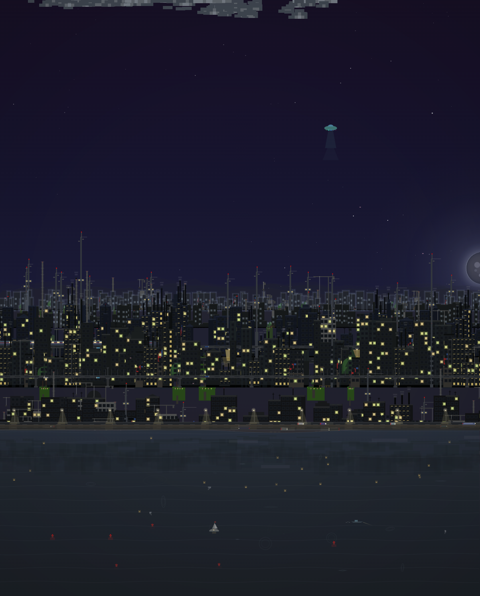
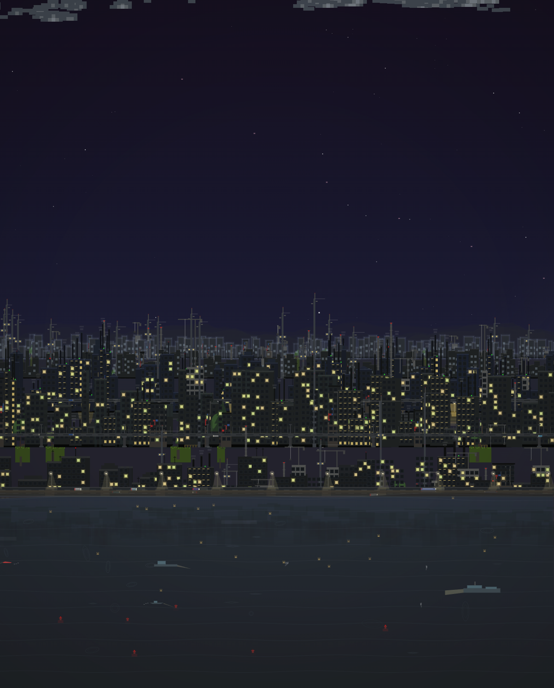
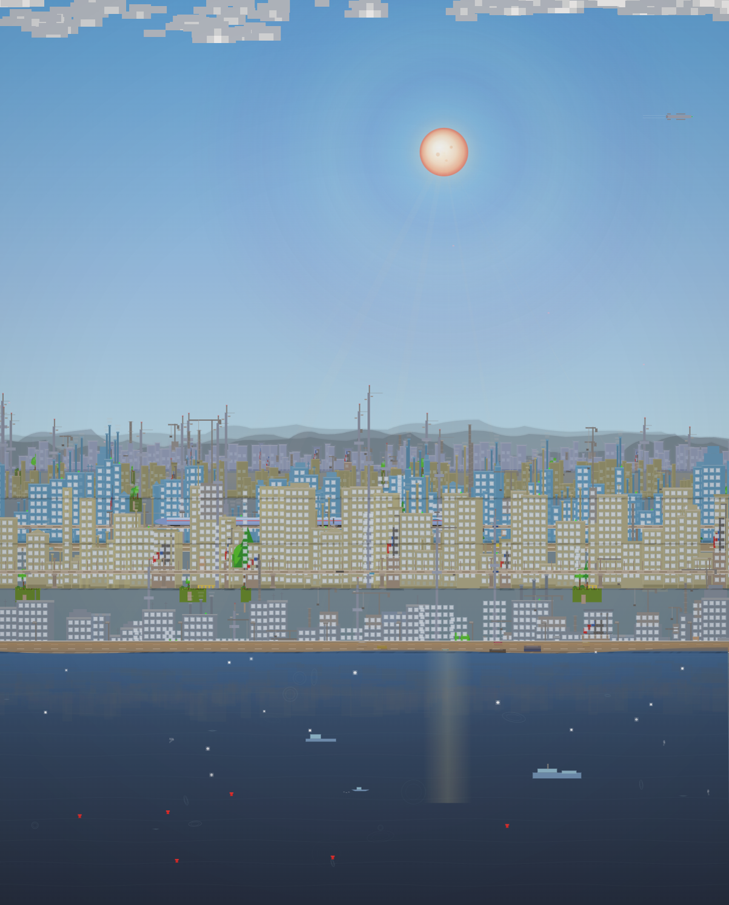
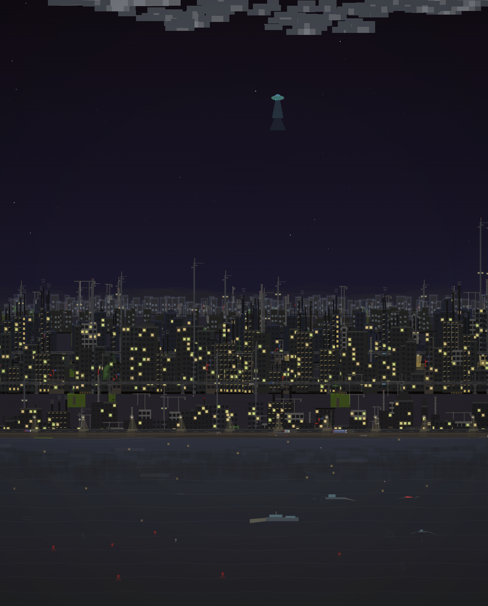
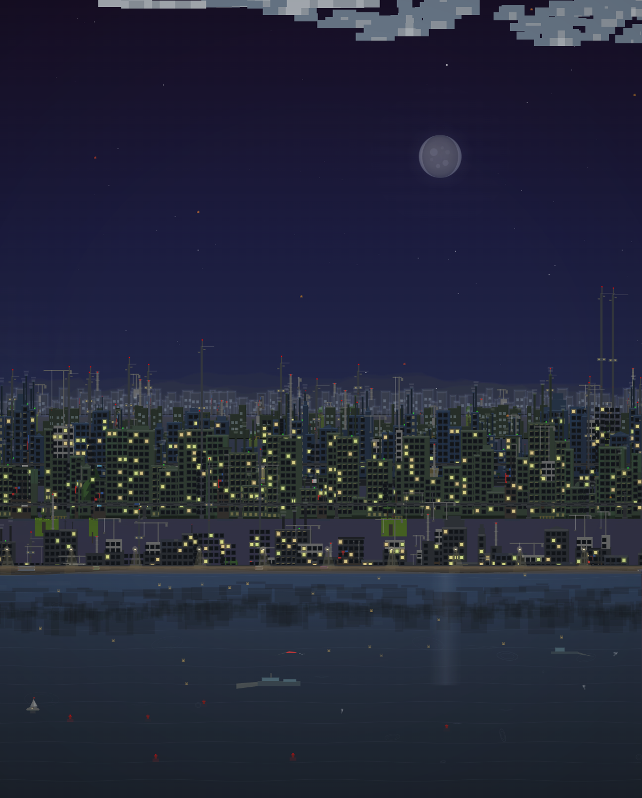
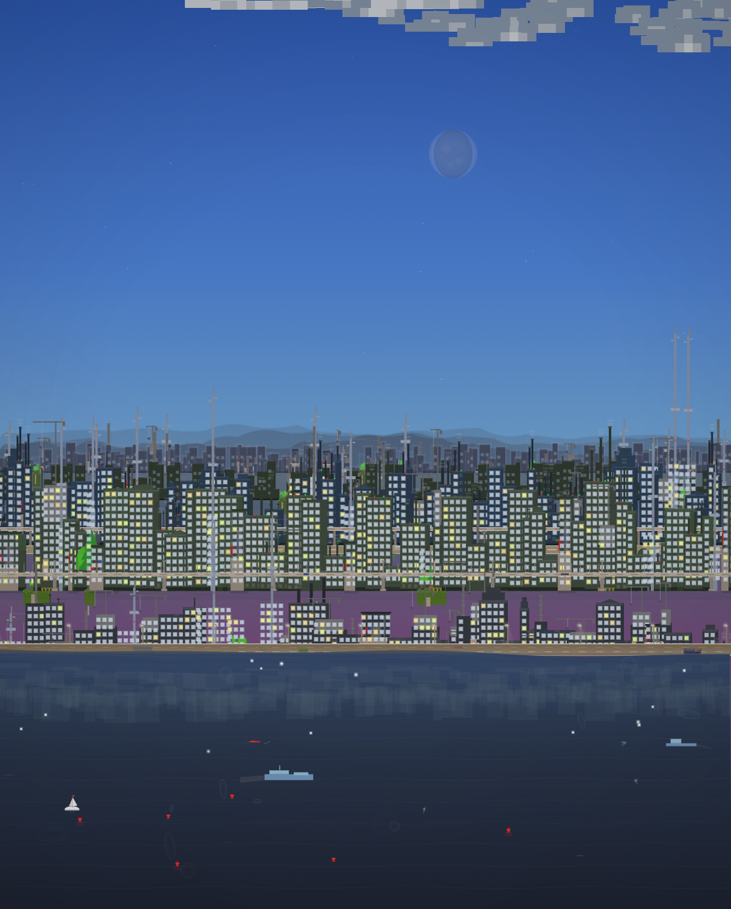

CityTone
A music-reactive cityscape visualizer

CityTone transforms your music into a living, breathing urban panorama. Every skyscraper, every cloud, every ripple on the water responds to what you hear. Built as a single HTML file with zero dependencies, it runs anywhere a modern browser does.
Music-Reactive Skyline
Buildings across five parallax layers are assigned frequency bands from a real-time FFT analyzer. As your music plays, each building smoothly pulses between 30% and 250% of its base height. Window lights flicker and illuminate dynamically with the beat.

Dynamic Weather
Sixteen weather conditions transition naturally: rain, snow, fog, thunderstorms, dust storms, and more. Heavy rain drives particles sideways with wind, thunderstorms shake the screen with lightning bolts, and blizzards create a whiteout effect with gusting snow.


Seasons
Spring, summer, autumn, and winter cycle with smooth transitions. Park trees change shape and color with each season -- round bushy canopies in summer, golden cones in autumn, bare branches with snow in winter, and five distinct tree shapes across the cityscape.


What Makes It Unique
- Six cloud types -- cumulus, stratus, cirrus, cumulonimbus, altocumulus, and cirrocumulus, each at their natural altitude
- Five ship types -- from small fishing boats to a gigantic cruise ship with 48 illuminated cabin windows
- Sailboat -- with main sail, jib sail, and a waving flag that billows in the travel direction
- High-speed bullet train -- with aerodynamic nose, catenary poles, and overhead wire, running on the elevated highway
- Modern arch bridges -- three styles (cable-stayed, parabolic arch, tied-arch) appear randomly and span across cityscape layers
- Easter eggs -- UFO with tractor beam, commercial airplanes with contrails, glowing asteroids, and a cruise ship
- Expanding water ripples -- four shapes (circles, wide ellipses, tall ellipses, diamonds) with concentric rings
- Tides and waves -- the water level slowly rises and falls while the surface edge undulates with composite sine waves
- Randomized sunsets -- six palettes from Rose-Magenta to Arctic Teal, changing every dawn and dusk
- Stars with magnitude distribution -- tiny dim dots, medium stars, and rare bright ones with glow halos and trailing streaks
Open index.html in any modern browser. Add your music. Watch the city come alive.
No build tools. No dependencies. No installation. A single HTML file.